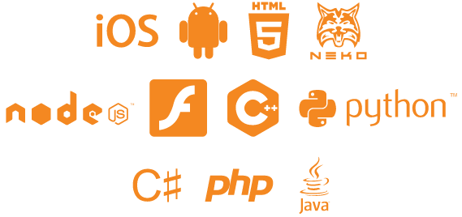

Haxe is a platform-agnostic open-source programming language and compiler.
The language itself is high level, strictly typed, and similar to other OOP (Object Oriented Programming) languages, such as Java, AS3 and C#. This makes it an easy language to adapt to for experienced programmers, and a great choice for those who are just beginning to code.
The Haxe compiler allows developers to compile their programs to a wide array of platforms. This means that you can write your code once, and export it to multiple different mainstream platforms, making them run as native applications.
Haxe first appeared in 2005 and has been evolving and gaining popularity ever since. Today thousands of developers use it to create applications for desktop, mobile, web and servers. Thanks to the cross-platform compiler, Haxe is a great choice for game developers.
The Haxe Standard Library, which is included in the toolkit, provides a wide range of general-purpose tools for developers to use. Besides the common API tools, there are also target-specific APIs available.
Haxe is not a framework, but has a lot of frameworks made for it. A very popular framework for Haxe, which will also be discussed on this website a lot, is OpenFL (formerly called NME). This framework provides a graphics API very similar to AS3. The combination of the easy-to-use interface with cross-platform native hardware rendering makes OpenFL a great tool for developing cross platform games.
My name is Kirill Poletaev, and I will be writing tutorials and articles dedicated to Haxe and its frameworks on this website.
If you would like to give Haxe a try, head on to the first tutorial, which explains how to set up the development environment for creating games and apps in Haxe.